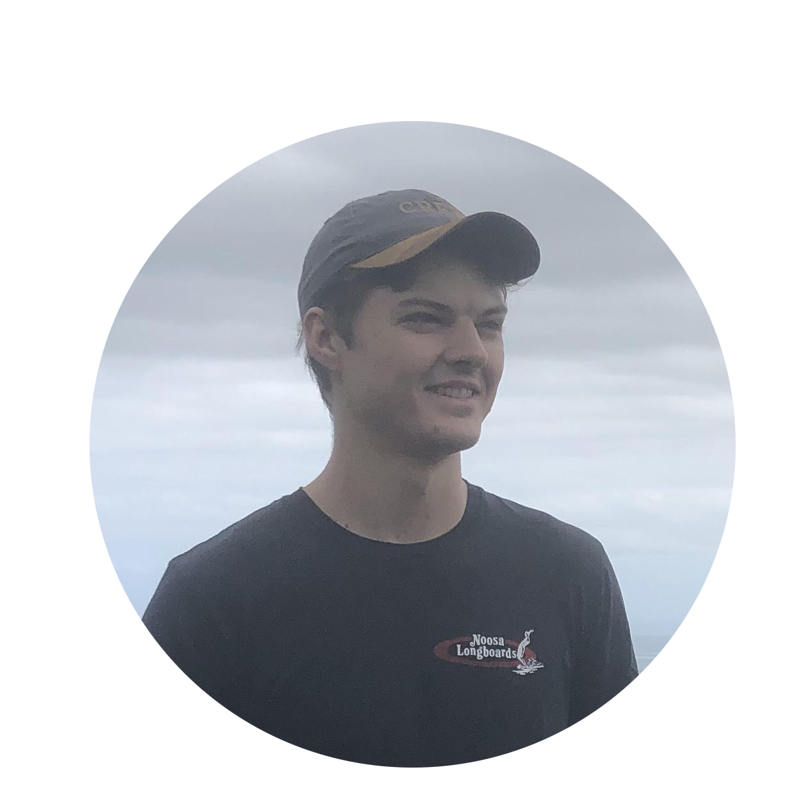

About
Chris Cooper is a software engineer living and working in Sydney, Australia.
Curriculum Vitae
Experience
Graduate Software Engineer - Nearmap
- July 2020 - Present
- Working to improve the accuracy of aerial photomaps and 3D reconstructions.
- Developing camera modelling tools and cloud-based aerial photogrammetry applications.
Engineering Intern - Mission Systems
- Dec 2019 - June 2020
- Worked on developing simulation tools testing multirotor drone robotic systems.
Education
The University of Sydney
- Bachelor of Engineering Honours (Mechatronic Engineering) (Space Engineering)
- Honours Class 1 and the University Medal
The Scots College
- Dux of the College
- 99.90 ATAR
Skills
- Software engineering experience in C, C++ and Python.
- Experience building cloud applications with AWS and DigitalOcean.
- Robotics experience, including sensor fusion, planning and control.
- Experience with PCB design and programming embedded systems.
Awards
- Outstanding Proficiency Prize in Senior Mechatronic Engineering.
- William and Jane Grahame Mechanical Engineering Scholarship.
- Dean's Excellency Award (2017, 2018, 2019)